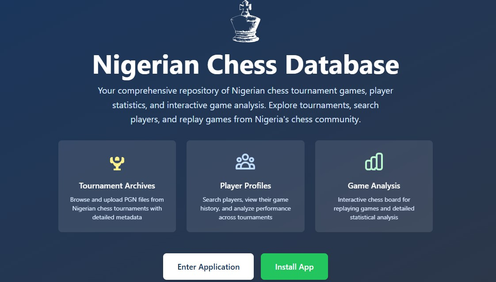
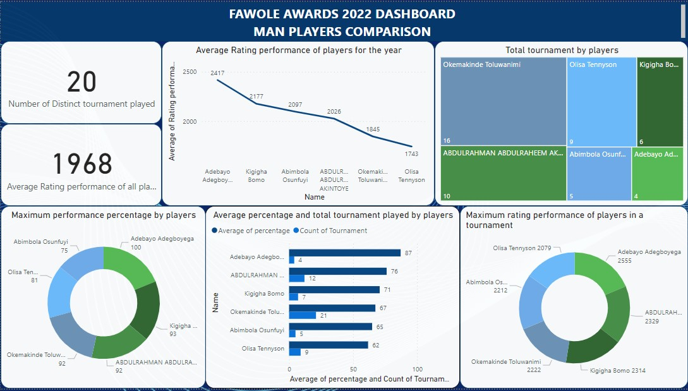
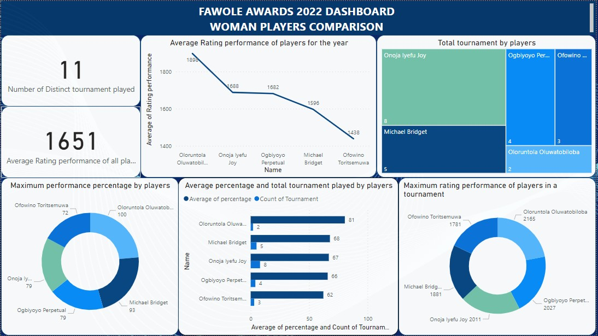

Featured Projects

Nigerian Chess Database (9jachessdb)
Nigeria's first structured chess games database. Designed and built end-to-end—from It is a comprehensive repository of Nigerian chess tournament games, player statistics, and interactive game analysis. Players can explore tournaments played recently or years back, watch live games, search players, and replay games from Nigeria's chess community.


John Fawole Chess Awards Analysis
Designed an end-to-end performance evaluation framework to assess national chess players. Built interactive dashboards for transparent candidate comparison, directly influencing award outcomes at the national level.

Credit Scoring for the Unbanked
Contributed to the analytical design and evaluation of a credit scoring model supporting financial inclusion initiatives. Applied machine learning techniques to assess creditworthiness for individuals without traditional banking history.
Skills & Expertise
Data Science & Analytics
Product & Engineering
Business & Strategy
Tools & Technologies
Let's Build Together
I'm always open to discussing new projects, creative ideas, or opportunities to create impact.